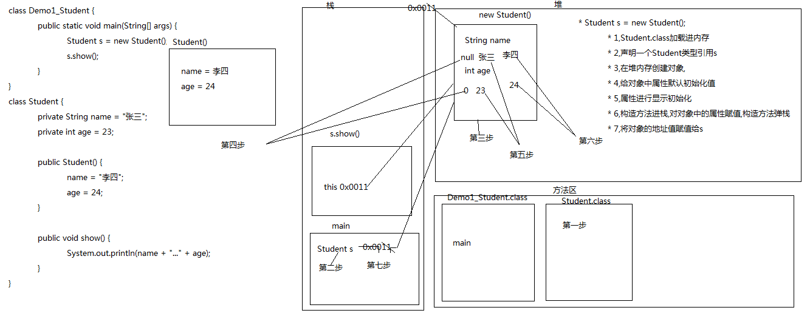

01_面向对象(构造方法Constructor概述和格式)
|
* A:构造方法概述和作用 * 给对象的数据(属性)进行初始化 * B:构造方法格式特点 * a:方法名与类名相同(大小也要与类名一致) * b:没有返回值类型，连void都没有 * c:没有具体的返回值return; |
|
class Demo1_Constructor {//Constructor构造 public static void main(String[] args) { Person p = new Person();//在一创建对象的时候,系统就帮我调用了构造方法 //p.Person();//构造方法不能用对象调用 p.show(); Person p2 = new Person();//再次创建对象 p2.show(); } }
/* * A:构造方法概述和作用 * 给对象的数据(属性)进行初始化 * B:构造方法格式特点 * a:方法名与类名相同(大小也要与类名一致) * b:没有返回值类型，连void都没有 * c:没有具体的返回值return; */
class Person { private String name; private int age;
//构造方法 public Person() { //System.out.println("Hello World!"); //return;//构造方法也是有return语句的,格式是return; name = "张三"; age = 23; } public void show() { System.out.println(name + "..." + age); } } |
|
构造方法的作用及格式特点分别是什么？ * a:方法名与类名相同(大小也要与类名一致) * b:没有返回值类型，连void都没有 * c:没有具体的返回值return; 思考：构造方法可以重载吗？ 可以 |
02_面向对象(构造方法的重载及注意事项)
|
* A:案例演示 |
|
class Demo2_Person { public static void main(String[] args) { Person p1 = new Person(); p1.show(); System.out.println("---------------------"); Person p2 = new Person("张三",23); p2.show(); System.out.println("---------------------"); Person p3 = new Person("李四",24); p3.show(); } } /* * A:案例演示 * 构造方法的重载 * 重载:方法名相同,与返回值类型无关(构造方法没有返回值),只看参数列表 * B:构造方法注意事项 * a:如果我们没有给出构造方法，系统将自动提供一个无参构造方法。 * b:如果我们给出了构造方法，系统将不再提供默认的无参构造方法。 * 注意：这个时候，如果我们还想使用无参构造方法，就必须自己给出。建议永远自己给出无参构造方法
*/ class Person { private String name;//姓名 private int age;//年龄
public Person() {//空参构造 System.out.println("空参的构造"); } public Person(String name,int age) { this.name = name; this.age = age; System.out.println("有参的构造"); } public void show() { System.out.println(name + "..." + age); } } |
|
使用构造方法的时候，注意事项有哪些？ * a:如果我们没有给出构造方法，系统将自动提供一个无参构造方法。 * b:如果我们给出了构造方法，系统将不再提供默认的无参构造方法。 * 注意：这个时候，如果我们还想使用无参构造方法，就必须自己给出。建议永远自己给出无参构造方法
• 思考题：构造方法，set方法都可以给成员变量赋值，这两种赋值方式有什 么区别？ |
03_面向对象(给成员变量赋值的两种方式的区别)
|
* A:setXxx()方法 |
|
class Demo3_Person { public static void main(String[] args) { Person p1 = new Person("张三",23); //p1 = new Person("张天一",23);//这种方式看运行结果貌似是改名了,其实是将原对象变成垃圾 System.out.println(p1.getName() + "..." + p1.getAge());
System.out.println("--------------------"); Person p2 = new Person();//空参构造创建对象 p2.setName("李四"); p2.setAge(24); p2.setName("李鬼"); System.out.println(p2.getName() + "..." + p2.getAge()); } } /* 构造方法 给属性进行初始化 setXxx方法 修改属性值 这两种方式,在开发中用setXxx更多一些,因为比较灵活 */ class Person { private String name;//姓名 private int age;//年龄
public Person() {//空参构造 } public Person(String name,int age) {//有参构造 this.name = name; this.age = age; } public void setName(String name) {//设置姓名 this.name = name; } public String getName() {//获取姓名 return name; } public void setAge(int age) {//设置年龄 this.age = age; } public int getAge() {//获取年龄 return age; } } |
04_面向对象(学生类的代码及测试)
|
* A:案例演示 * 学生类： * 成员变量： * name，age * 构造方法： * 无参，带两个参 * 成员方法： * getXxx()/setXxx() * show()：输出该类的所有成员变量值 * B:给成员变量赋值： * a:setXxx()方法 * b:构造方法
* C:输出成员变量值的方式： * a:通过getXxx()分别获取然后拼接 * b:通过调用show()方法搞定 |
|
class Demo4_Student { public static void main(String[] args) { Student s1 = new Student();//使用空参构造 s1.setName("张三");//设置姓名 s1.setAge(23);//设置年龄
System.out.println("我的姓名是:" + s1.getName() + ",我的年龄是:" + s1.getAge()); //getXxx()获取属性值,可以打印,也可以赋值给其他的变量,做其他的操作 Student s2 = new Student("李四",24); s2.show();//只是为了显示属性值 } } /* * A:案例演示 * 学生类： * 成员变量： * name，age * 构造方法： * 无参，带两个参 * 成员方法： * getXxx()/setXxx() * show()：输出该类的所有成员变量值 * B:给成员变量赋值： * a:setXxx()方法 * b:构造方法
* C:输出成员变量值的方式： * a:通过getXxx()分别获取然后拼接 * b:通过调用show()方法搞定 */ class Student { private String name;//姓名 private int age;//年龄
public Student(){}//空参构造 public Student(String name,int age) {//有参构造 this.name = name; this.age = age; } public void setName(String name) {//设置姓名 this.name = name; } public String getName() {//获取姓名 return name; } public void setAge(int age) {//设置年龄 this.age = age; } public int getAge() {//获取年龄 return age; } public void show() { System.out.println("我的姓名是:" + name + ",我的年龄是:" + age); } } |
|
• 模仿刚才的学生类代码，写一个手机类并测试。 手机类： 成员变量： 品牌（brand），价格（price） 构造方法： 无参构造，带参构造 成员方法： 各个字段对应的setXXX()和getXXX()方法, show()方法：这个方法用来显示手机的品牌和价格
|
05_面向对象(手机类的代码及测试)
|
* A:案例演示 |
|
class Demo5_Phone { public static void main(String[] args) { Phone p1 = new Phone(); p1.setBrand("苹果"); p1.setPrice(1500); System.out.println(p1.getBrand() + "..." + p1.getPrice()); Phone p2 = new Phone("小米",98); p2.show(); } } /* 手机类: 成员变量: 品牌brand,价格price 构造方法 无参,有参 成员方法 setXxx和getXxx show */ class Phone { private String brand;//品牌 private int price;//价格
public Phone(){}//空参构造 public Phone(String brand,int price) {//有参构造 this.brand = brand; this.price = price; } public void setBrand(String brand) {//设置品牌 this.brand = brand; } public String getBrand() {//获取品牌 return brand; } public void setPrice(int price) {//设置价格 this.price = price; } public int getPrice() {//获取价格 return price; } public void show() { System.out.println(brand + "..." + price); } } |
06_面向对象(创建一个对象的步骤)
|
* A:画图演示 |
|
 |
|
一个对象的创建过程做了哪些事情？ 需求：定义一个长方形类，类中有两个方法，分别求长方形的周长和面积的方法，然后定义一个测试类进行测试。 |
|
矩形：Rectangle 求周长的方法： getLength() 求面积的方法： getArea() |
07_面向对象(长方形案例练习)
|
* A:案例演示 |
|
class Test1_Rectangle {//Rectangle矩形 public static void main(String[] args) { Rectangle r = new Rectangle(10,20); System.out.println(r.getLength());//周长 System.out.println(r.getArea());//面积 } } /* * A:案例演示 * 需求： * 定义一个长方形类,定义 求周长和面积的方法， * 然后定义一个测试类进行测试。 分析: 成员变量: 宽width,高high 空参有参构造 成员方法: setXxx和getXxx 求周长:getLength() 求面积:getArea() */ class Rectangle { private int width;//宽 private int high;//高 public Rectangle(){}//空参构造 public Rectangle(int width,int high) { this.width = width;//有参构造 this.high = high; } public void setWidth(int width) {//设置宽 this.width = width; } public int getWidth() {//获取宽 return width; } public void setHigh(int high) {//设置高 this.high = high; } public int getHigh() {//获取高 return high; } public int getLength() {//获取周长 return 2 * (width + high); } public int getArea() {//获取面积 return width * high; } } |
|
根据给定的需求，定义出员工类并测试。 |
08_面向对象(员工类案例练习)
|
* A:案例演示 |
|
class Test2_Employee {//employee员工 public static void main(String[] args) { Employee e = new Employee("令狐冲","9527",20000); e.work(); } } /* * A:案例演示 * 需求：定义一个员工类Employee * 自己分析出几个成员，然后给出成员变量 * 姓名name,工号id,工资salary * 构造方法， * 空参和有参的 * getXxx()setXxx()方法， * 以及一个显示所有成员信息的方法。并测试。 * work */ class Employee { private String name;//姓名 private String id;//工号 private double salary;//工资
public Employee() {}//空参构造
public Employee(String name, String id, double salary) {//有参构造 this.name = name; this.id = id; this.salary = salary; } public void setName(String name) {//设置姓名 this.name = name; } public String getName() {//获取姓名 return name; } public void setId(String id) {//设置id this.id = id; } public String getId() {//获取id return id; } public void setSalary(double salary) {//设置工资 this.salary = salary; } public double getSalary() {//获取工资 return salary; } public void work() { System.out.println("我的姓名是:" + name + ",我的工号是:" + id + ",我的工资是:" + salary + ",我的工作内容是敲代码"); } }
|
09_面向对象(static关键字及内存图)
|
* A:案例演示 |
|
class Demo1_Static { public static void main(String[] args) { /*Person p1 = new Person();//创建对象 p1.name = "苍老师";//调用姓名属性并赋值 p1.country = "日本";//调用国籍属性并赋值
Person p2 = new Person(); p2.name = "小泽老师";//调用姓名属性并赋值 //p2.country = "日本";//调用国籍属性并赋值
p1.speak(); p2.speak();*/ Person.country = "日本";//静态多了一种调用方式,可以通过类名. System.out.println(Person.country); } } class Person { String name;//姓名 static String country;//国籍
public void speak() {//说话的方法 System.out.println(name + "..." + country); } } |
|
|
10_面向对象(static关键字的特点)
|
* A:static关键字的特点 |
|
• static关键字的特点有哪些？ |
11_面向对象(static的注意事项)
|
* A:static的注意事项 * a:在静态方法中是没有this关键字的 * 如何理解呢? * 静态是随着类的加载而加载，this是随着对象的创建而存在。 * 静态比对象先存在。 * b:静态方法只能访问静态的成员变量和静态的成员方法 * 静态方法： * 成员变量：只能访问静态变量 * 成员方法：只能访问静态成员方法 * 非静态方法： * 成员变量：可以是静态的，也可以是非静态的 * 成员方法：可是是静态的成员方法，也可以是非静态的成员方法。 * 简单记： * 静态只能访问静态。 * B:案例演示 * static的注意事项 |
|
• 使用static关键字，有哪些注意事项？ • 思考题：静态变量和成员变量有哪些区别？（1分钟） |
12_面向对象(静态变量和成员变量的区别)
|
* 静态变量也叫类变量 成员变量也叫对象变量 * A:所属不同 * 静态变量属于类，所以也称为为类变量 * 成员变量属于对象，所以也称为实例变量(对象变量) * B:内存中位置不同 * 静态变量存储于方法区的静态区 * 成员变量存储于堆内存 * C:内存出现时间不同 * 静态变量随着类的加载而加载，随着类的消失而消失 * 成员变量随着对象的创建而存在，随着对象的消失而消失 * D:调用不同 * 静态变量可以通过类名调用，也可以通过对象调用 * 成员变量只能通过对 象名调用 |
|
class Demo2_Static { public static void main(String[] args) { //Demo d = new Demo(); //d.print1(); Demo.print2(); } }
/* * A:static的注意事项 * a:在静态方法中是没有this关键字的 * 如何理解呢? * 静态是随着类的加载而加载，this是随着对象的创建而存在。 * 静态比对象先存在。 * b:静态方法只能访问静态的成员变量和静态的成员方法 * 静态方法： * 成员变量：只能访问静态变量 * 成员方法：只能访问静态成员方法 * 非静态方法： * 成员变量：可以是静态的，也可以是非静态的 * 成员方法：可是是静态的成员方法，也可以是非静态的成员方法。 * 简单记： * 静态只能访问静态。 */
class Demo { int num1 = 10;//非静态的成员变量 static int num2 = 20;//静态的成员变量
/*public void print1() {//非静态的成员方法,既可以访问静态的成员也可以访问非静态的 System.out.println(num1); System.out.println(num2); }*/
public static void print2() {//静态的成员方法 //System.out.println(this.num1);//静态的成员方法不能访问非静态的,错误: 无法从静态上下文中引用非静态 变量 num1 System.out.println(num2); } } |
|
|
|
• 回顾下，咱们之前学习的局部变量和成员变量的区别是什么？ |
13_面向对象(main方法的格式详细解释)
|
* A:格式 |
|
class Demo3_Main { public static void main(String[] args) { /* public : 被jvm调用,所以权限要足够大 static : 被jvm调用,不需要创建对象,直接类名.调用即可 void : 被jvm调用,不需要有任何的返回值 main : 只有这样写才能被jvm识别,main不是关键字 String[] args : 以前是用来接收键盘录入的 */
System.out.println(args.length); for (int i = 0;i < args.length ;i++ ) { System.out.println(args[i]); } } } |
14_面向对象(工具类中使用静态)
|
* A:制作一个工具类 * ArrayTool * 1,获取最大值 * 2,数组的遍历 * 3,数组的反转 |
|
/** 这是一个数组工具类,里面封装了查找数组最大值,打印数组,数组反转的方法 @author fengjia @version v1.0 */ public class ArrayTool { //如果一个类中所有的方法都是静态的,需要再多做一步,私有构造方法,目的是不让其他类创建本类对象 //直接用类名.调用即可 /** 私有构造方法 */ private ArrayTool(){}
//1,获取最大值 /** 这是获取数组中最大值的方法 @param arr 接收一个int类型数组 @return 返回数组中最大值 */ public static int getMax(int[] arr) { int max = arr[0];//记录第一个元素 for (int i = 1;i < arr.length ;i++ ) {//从第二个元素开始遍历 if (max < arr[i]) {//max与数组中其他的元素比较 max = arr[i];//记录住较大的 } } return max;//将最大值返回 } //2,数组的遍历 /** 这是遍历数组的方法 @param arr 接收一个int类型数组 */ public static void print(int[] arr) { for (int i = 0;i < arr.length ;i++ ) {//遍历数组 System.out.print(arr[i] + " "); } } //3,数组的反转 /** 这是数组反转的方法 @param arr 接收一个int类型数组 */ public static void revArray(int[] arr) { for (int i = 0;i < arr.length / 2 ;i++ ) {//循环次数是元素个数的一半 /* arr[0]与arr[arr.length-1-0]交换 arr[1]与arr[arr.length-1-1]交换 arr[2]与arr[arr.length-1-2] 交换 */ int temp = arr[i]; arr[i] = arr[arr.length-1-i]; arr[arr.length-1-i] = temp; } } } |
|
class Demo1_ArrayTool { public static void main(String[] args) { int[] arr = {33,11,22,66,55,44}; /*ArrayTool at = new ArrayTool(); int max = at.getMax(arr);//获取最值 System.out.println(max);
System.out.println("---------------"); at.print(arr);//打印 System.out.println(); System.out.println("---------------"); System.out.println("反转后:"); at.revArray(arr);//反转 at.print(arr);*/
ArrayTool.print(arr); } } |
============ 作业 =============
1:构造方法的作用是什么?构造方法的特点是什么?构造方法的注意事项是什么?构造方法中可不可以写return语句呢?
答:构造方法是用于初始化,成员变量的...构造方法当创建对象时,被调用.不能用对象名调用,如果没有给出构造方法,系统会默认给出一个空参构造方法..构造方法中可以有return 但是不能有具体的返回值
2:给成员变量赋值有几种方式?
直接给出
构造方法中初始化成员变量
set/get
3:标准的代码编写及测试：
A:学生类的案例
B:手机类的案例
C:长方形类的案例
4:一个类的成员变量初始化过程
Student s = new Student();
字节码文件加载进方法去
mian方法加载进栈内存
主方法中声明一个类型引用
在堆内存中创建一个对象
成员变量默认初始化
成员变量显示初始化
构造方法初始化成员变量
把地址值赋给对象引用
5:static关键字是什么?有什么特点?什么时候用呢?
静态关键子,让所有对象共享被修饰的内容
随着类加载而加载
优先于对象存在
被所有对象和类所共享
ending...